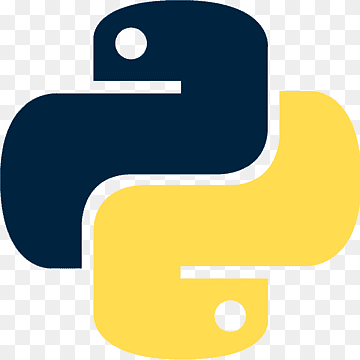
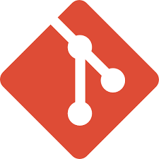

Bishwajeet Kumar RPA Developer
Certified UiPath Advanced RPA Developer with 4.5+ years of experience automating complex business processes. Building intelligent automation solutions that drive operational efficiency.
About Me
Certified UiPath Advanced RPA Developer
RPA Developer with 4.5+ years of experience in designing, developing, and delivering end-to-end automation solutions using UiPath. Skilled in building scalable and efficient robotic process automation workflows that streamline business operations, reduce manual effort, and improve process accuracy. Experienced in automating complex business processes involving web applications, desktop applications, Citrix environments, email automation, APIs, and document processing.
Strong understanding of the complete RPA lifecycle, including process assessment, solution design, development, testing, deployment, and production support. Hands-on experience collaborating with cross-functional teams and business stakeholders to identify automation opportunities and deliver high-quality solutions aligned with business objectives. Passionate about emerging AI-driven automation technologies and continuously expanding expertise in intelligent automation, agentic workflows, and modern enterprise automation practices. Committed to delivering innovative, reliable, and maintainable automation solutions that drive operational excellence and digital transformation.
Certifications
UiPath Advanced Developer
The UiPath Certified Advanced RPA Developer (UiARD) is expected to have a proven understanding and extensive hands-on experience with UiPath technologies such as Studio, Robots, and Orchestrator and the ability to independently build or lead production level automations in the Robotic Enterprise Framework. UiPath Advanced RPA Developer Certification is targeted to assess a deeper level of knowledge and skills for designing and independently developing complex RPA solutions in the Robotic Enterprise Framework. UiARD is a credential that represents a deeper level of expertise for roles such as Advanced RPA Developers, Solution Architects, RPA Architects, and others.
UiPath Certified Professional Automation Developer Professional Certification
The UiPath Certified Professional Automation Developer Professional Certification is expected to have a proven understanding and extensive hands-on experience with UiPath technologies such as Studio, Robots, and Orchestrator and the ability to independently build or lead production level automations in the Robotic Enterprise Framework. This is a credential that represents a deeper level of expertise for roles such as Advanced Automation Developers, Solution Architects, Automation Architects, and others.
UiPath Specialized AI Associate
The Specialized AI Associate is expected to have an essential understanding of UiPath’s Specialized AI solutions, such as Document Understanding, Communication Mining, and AI Center as well as automation development using Studio, Orchestrator, and Robot. This certification represents the ability to describe the technology landscape of AI and process automation and articulate how businesses can benefit from these technologies. The specialized AI Associate certification is designed for individuals in technical roles who have some experience with Document Understanding and Communication Mining and is a first step towards building advanced competencies in process automation and intelligent document processing (IDP)
UiPath Certified Professional Agentic Automation Associate Certification
UiPath Certified Professional Agentic Automation Associate certification validates foundational skills for collaborating with AI agents in process automation. It is well suited for individuals in both technical and non-technical roles, such as Citizen Developers, Business Analysts, Automation Developers, Solution Architects, and anyone looking to harness AI agents to enhance decision-making, streamline complex processes, and drive innovation in their work.
Full Stack Java Developer
Comprehensive training covering front-end development with HTML, CSS, JavaScript; back-end with Java, Spring Boot, RESTful APIs; and database management with SQL and Hibernate. Includes Git, Maven, and Jenkins tooling.
Automate With Ease
Expert tutorials on UiPath and RPA development — from beginner basics to advanced automation techniques, explained in Hindi. Whether you're starting out or leveling up, there's something here for you.

Technical Stack

Python Java
Java
 GitHub
GitHub

GitUiPath Expertise
Studio
Expert in UiPath Studio for building RPA workflows and automating processes with efficiency and scalability.
LINQ
Integrating LINQ with data tables, lists, and arrays to perform complex data operations and transformations.
API Integration
Integrating third-party APIs and web services into UiPath automation workflows seamlessly.
Data Extraction
Extracting, transforming, and manipulating data from Excel, databases, PDFs, and websites.
Document Understanding
Implementing UiPath's Document Understanding framework for processing structured and unstructured documents.
Exception Handling
Implementing robust exception handling with try-catch mechanisms, retries, and logging frameworks to ensure resilient bots.
Database Activities
Performing CRUD operations using queries, stored procedures, and transactions within automation workflows.
ReFramework
Configuring ReFramework for transactional processing, enhanced exception handling, and enterprise-grade automation.
UiPath Apps
Building interactive UiPath Apps as front-end interfaces for robots, enabling human-robot collaboration.
UI Automation
Implementing dynamic selectors and handling complex web tables, dynamic pop-ups for robust automation solutions.
Task Capture
Creating detailed process documentation and visual workflows from recorded user actions using UiPath Task Capture.
Citrix Automation
AI Computer Vision for improved automation in virtual desktop environments and Citrix infrastructure.
Version Control
Efficient Git usage for collaboration — managing code versions, branches, pull requests, and conflict resolution.
Email Automation
Proficiency in UiPath's Mail activities (Outlook, SMTP, IMAP, POP3) for automating email communication tasks.
Debugging & Troubleshooting
Analyzing logs, using breakpoints, stepping through code, and monitoring variables with Locals and Immediate panels.
Experience